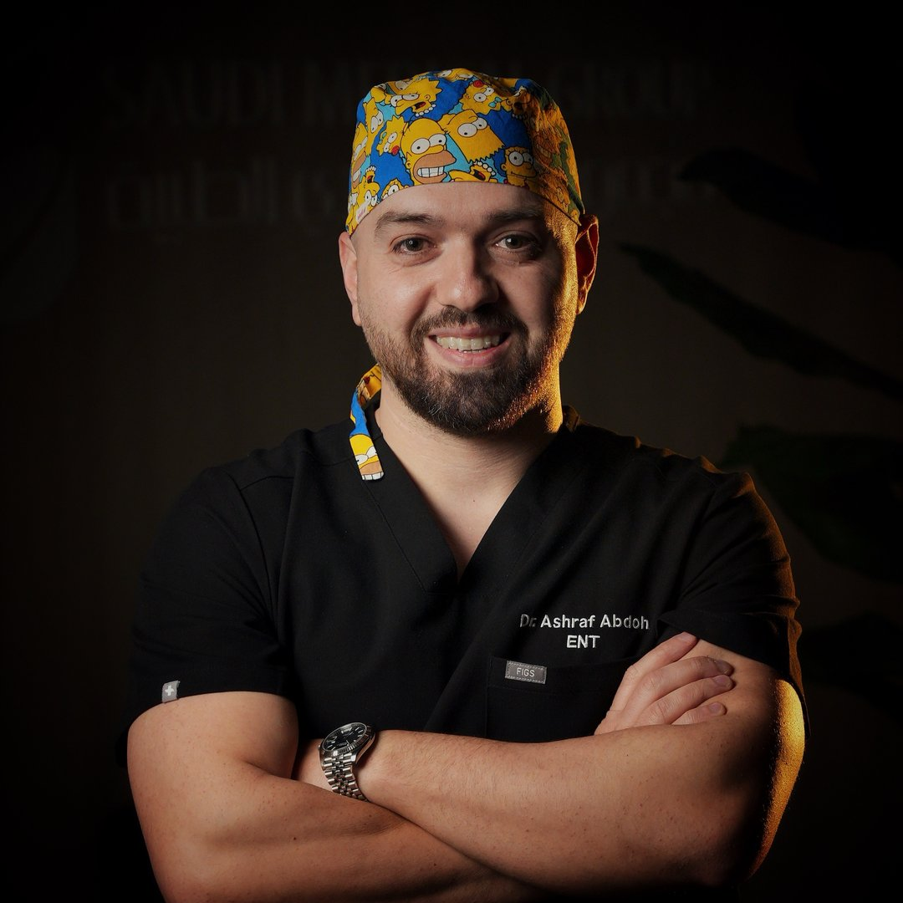

أخصائي أنف وأذن وحنجرة · تجميل الأنف
د. أشرف عبده
يركز على تجميل الأنف حين يكون السؤال عن الظهر أو الطرف أو تناسب الوجه، ويفحص المجرى في الزيارة نفسها حتى لا يُرسم الشكل من الخارج وحده.
- البورد الأردني في الأنف والأذن والحنجرة
- MRCS (ENT) — الكلية الملكية للأطباء والجراحين في غلاسكو
- DO-HNS — الكلية الملكية للجراحين في إيرلندا
- Rhinoplasty Society of Europe